出發前注意事項與行前準備
台胞證件・行動支付實名認證・CCC認證行動電源・江南春季衣著・常備藥品

護照與必備證件
貨幣與行動支付準備
通訊網路與必載 APP
行動電源攜帶法規（中國境內安檢重點）
⚠️ 重大警示：搭乘往返中國航班及境內安檢，行動電源本體必須清晰印有 CCC 認證標誌（中國強制性產品認證）或符合各項民航規格標示，無標示、標示模糊或未經核可者將在安檢時直接被沒收！
（China Compulsory Certification）
請檢查行動電源外殼是否有清晰完整的標籤
- 🟢 100Wh 以下（約 20,000mAh~27,000mAh / 3.7V）：可正常隨身攜帶，每人上限 2 顆。
- 🟡 100Wh ～ 160Wh：需經航空公司專案批准後方可攜帶。
- 🔴 超過 160Wh 或未標註額定容量之行動電源：全面禁止攜帶上機。
常備個人藥品
4月江南春季氣候與衣著裝備
高雄 ✈➔ 香港中轉 ✈➔ 上海浦東 ➔ 杭州
國泰雙程航空・香港T1流暢中轉・專屬旅遊中巴接機・夜抵杭州西湖商圈全季酒店
包車出發前往高雄國際機場
依約定時間地點準時上車，專車接送前往高雄小港國際機場（KHH）。請務必於上車前再次確認護照與台胞證隨身攜帶。
高雄小港機場集合・國泰航空報到
於國際線出境大廳國泰航空櫃檯集合，辦理登機報到手續。一次領取「高雄➔香港」與「香港➔上海浦東」兩段登機證，大型行李直掛上海浦東（PVG），隨後通過安檢與證照查驗前往登機門。

✨ 無需重新託運行李（行李全程直掛上海浦東）。
✨ 無需過境簽，下機後請沿「轉機/過境 (Transfers)」專用通道通過安檢，直接前往下一登機門。
抵達上海浦東機場 T2・專車接機前往杭州
國泰班機順利降落上海浦東國際機場（PVG）T2 航廈，入境提領託運行李後，約於 17:30 出航廈會合專屬旅遊中巴車，啟程專車直奔「人間天堂」杭州市，車程約 2.5 ~ 3 小時。
全季酒店 (杭州西湖湖濱吳山廣場店)
Trip.com 評分高達 9.5 分！ 地處西湖湖濱與吳山商圈交會處，地理位置極為優越，步行即可達河坊街與南宋御街，周遭生活機能極佳，連續入住 3 晚免收行李之苦。
📍 開啟 Trip.com 查看飯店詳情與實景設施靈隱祈福 ➔ 西溪濕地生態漫遊 ➔ 杭城晚景
靈隱寺參拜・飛來峰石窟摩崖造像・西溪水上森林搖櫓船・河坊街南宋御街老字號美饌
專車出發・【靈隱寺】參拜祈福與【飛來峰】石窟造像
酒店享用豐盛早餐後，搭乘專車前往江南禪宗五山之首——靈隱寺。走訪千年古剎大雄寶殿、天王殿，順遊飛來峰探訪宋元時期珍貴的摩崖石刻造像、大肚彌勒佛石雕與冷泉飛瀑，感受空靈禪韻與山水勝景。
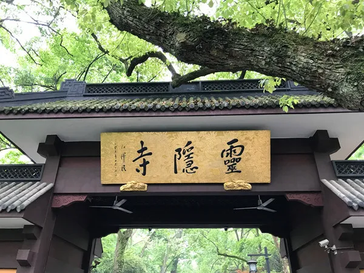
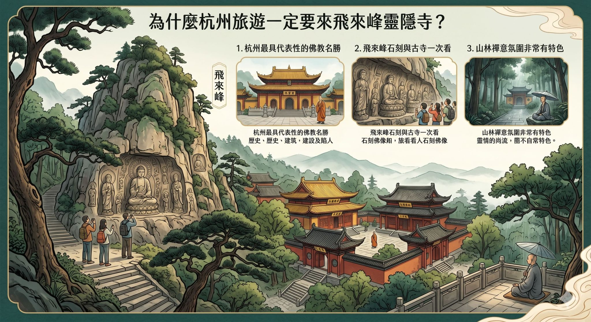
靈隱景區自理午餐（推薦杭幫菜 / 靈隱素齋麵）
靈隱寺出口周邊有許多雅緻茶肆與素齋館，推薦品嚐聞名遐邇的靈隱十願素麵、羅漢齋麵或地道杭幫小炒，清心養胃。
【西溪國家濕地公園】水上森林漫遊（搭乘搖櫓船）
專車前往中國首個集城市濕地、農耕濕地與文化濕地於一體的國家 5A 級景區。搭乘傳統特色搖櫓木船穿梭於港汊交錯的水上森林與蘆葦蕩，聆聽船槳划水聲，走訪福堤與煙水漁莊，深切體會宋高宗「西溪且留下」的恬淡自然野趣。
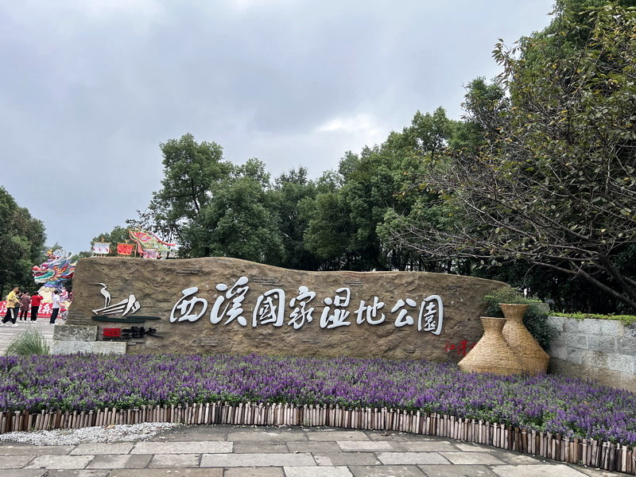
返抵飯店・步行漫步【河坊街】與【南宋御街】晚景散策
專車返回飯店稍事整裝後，步行前往飯店旁的歷史文化街區。南宋御街為昔日臨安皇城御道，河坊街則保留明清江南古街風格，入夜後紅燈籠高掛，可在此大啖地道傳統小吃並挑選精緻伴手禮。
宿：全季酒店 (杭州西湖湖濱吳山廣場店)
逛完河坊街後可從容漫步返回飯店休息，享受安靜舒適的睡眠環境，免去更換飯店行李搬運之苦。
📍 開啟 Trip.com 查看飯店詳情與實景設施西湖勝景 ➔ 登雷峰塔 ➔ 宋城千古情
西湖遊船遠眺三潭印月・蘇堤春曉與花港觀魚・登雷峰塔俯瞰西湖全貌・世界三大名秀《宋城千古情》
【杭州西湖風景區】搭船漫遊・走訪蘇堤花港・登上【雷峰塔】
酒店享用早餐後出發前往世界文化遺產——西湖。搭乘西湖遊船飽覽湖光山色，遠眺著名的「三潭印月」（一元人民幣背面圖案），隨後走訪十景之「蘇堤春曉」與「花港觀魚」餵錦鯉，並登上氣勢恢宏的【雷峰塔】，搭電梯登高俯瞰西湖十景全景視野！
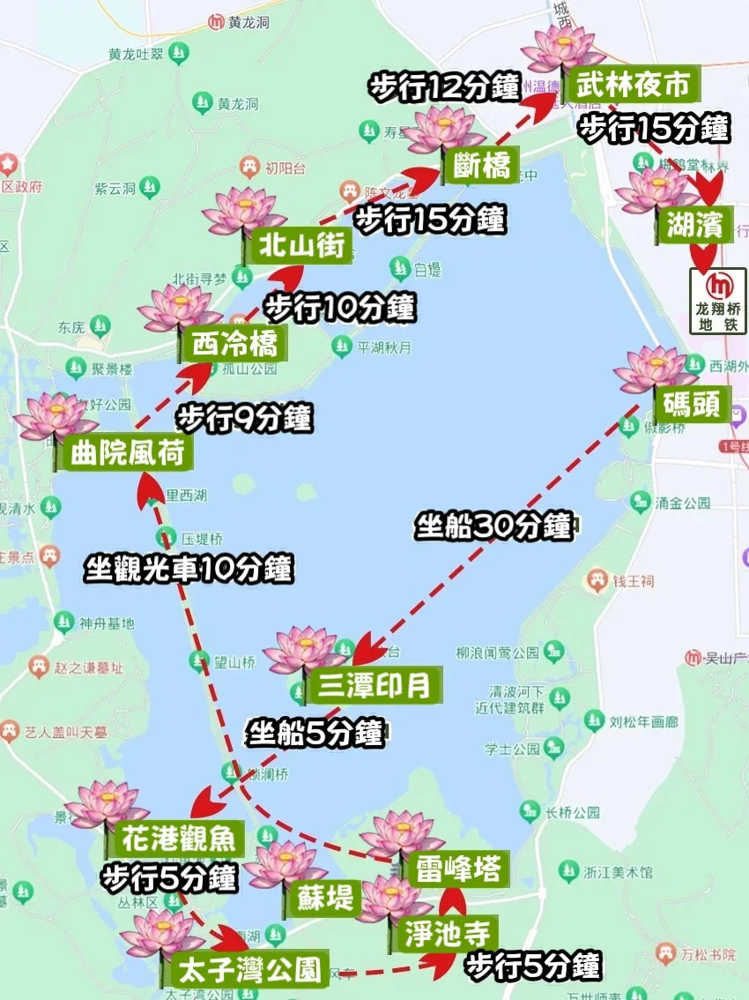
西湖周邊景觀餐廳自理午餐
在西湖畔特色酒樓享用午餐，推薦品嚐杭州百年名菜「樓外樓」或「知味觀」招牌經典。
【杭州宋城主題公園】古風體驗・觀賞《宋城千古情》大秀
午後專車前往宋城，走進仿宋建築林立的古風繁華市井街區，體驗拋繡球招親、衙門斷案等沉浸式民俗實景互動。重頭戲為入座觀賞世界三大名秀之一——《宋城千古情》！運用頂尖聲光電科技、水幕與舞台機關，震撼演繹良渚之光、宋宮宴樂、岳飛抗金到梁祝白蛇千古絕唱，「給我一天，還你千年」！
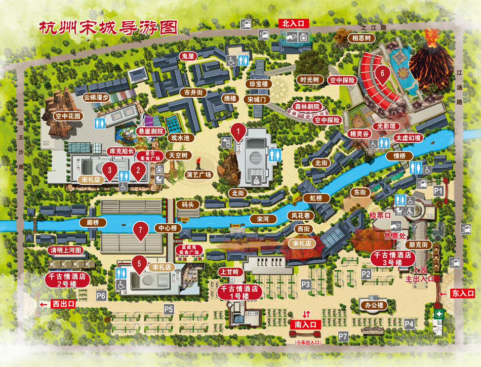
演出結束・專車前往武林夜市，再自行回酒店。
千古情精采大秀謝幕後，專車前往著名的【武林夜市】下車，品嚐香酥蔥油餅、叫花雞、生煎包等平民宵夜，搭乘地鐵回酒店(鳳起路站→吳山廣場站，票價2元)，或沿湖畔晚風徐徐散步回飯店(約3公里)。
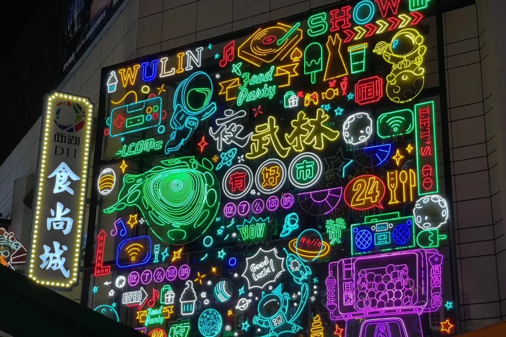
塘棲運河古鎮 ➔ 水鄉周莊 ➔ 蘇州
京杭大運河廣濟橋・塘棲老字號茶點伴手禮・「中國第一水鄉」周莊古鎮手搖船・宿蘇州陸慕地鐵站斐利酒店
辦理退房・專車前往京杭大運河【塘棲古鎮】
辦理退房手續並將行李安置於旅遊專車上，專車出發前往運河名鎮——塘棲古鎮。塘棲是京杭大運河進入杭州的門戶，漫步遊覽大運河上唯一的七孔石拱長橋【廣濟橋】、乾隆禦碑、郭璞井及運河穀倉博物館。
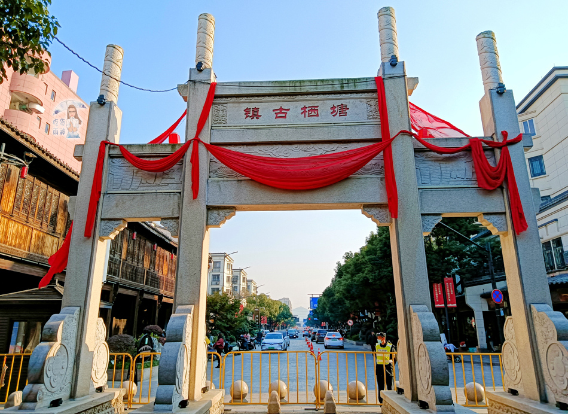
🏷️ 老杭州人專程前來採買的老字號名產：
法根糕點鋪與朱一堂的傳統綠豆糕、立夏餅、匯昌粽、粢毛肉圓、細沙羊尾、塘棲板鴨，皆是遠近馳名的百年手藝。
塘棲古鎮午餐・啟程前往【周莊古鎮】
於塘棲古鎮水岸自理享用美味午餐後，全員搭乘專屬中巴啟程前往「中國第一水鄉」周莊古鎮，車程約 1.5 至 2 小時，沿途可稍作小憩。
遊覽「中國第一水鄉」【周莊古鎮】
踏入聞名海內外的江南第一水鄉——周莊。走訪著名旅美畫家陳逸飛筆下的靈感地【雙橋】（世德橋與永安橋）、江南首富沈萬三後人建造的【沈廳】（松茂堂七進豪宅）與明代官宦巨宅【張廳】。也可以自費體驗水巷手搖船，伴隨船娘悠揚的江南小調，穿行於小橋、流水、人家之間，感受濃郁姑蘇水鄉神韻。
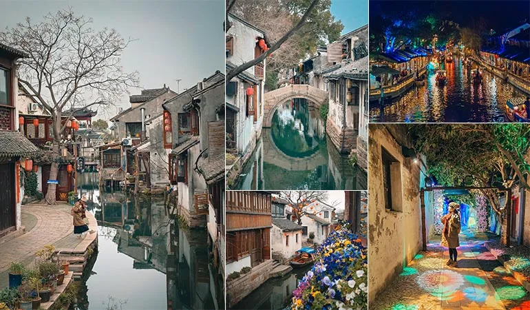
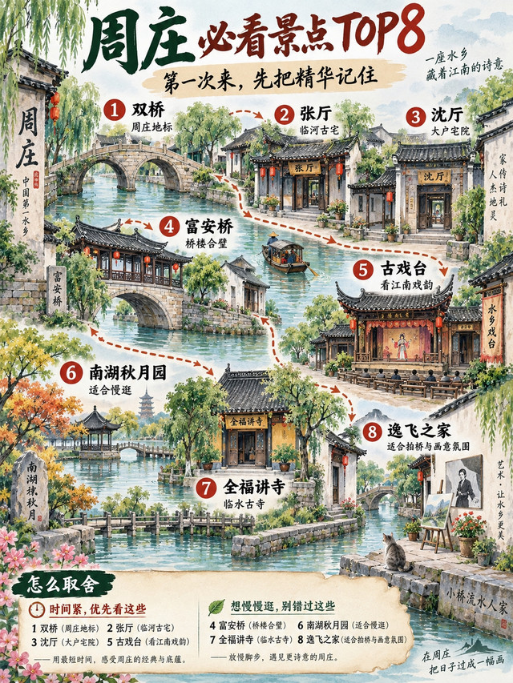
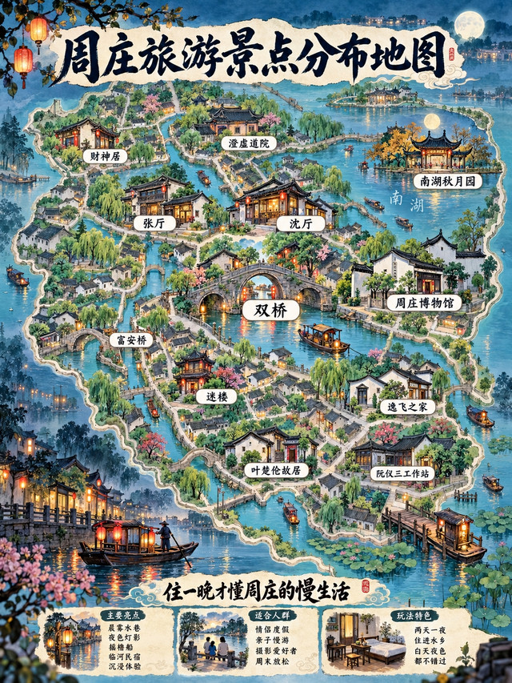
專車接送前往蘇州斐利酒店辦理入住
告別周莊依依水影，專車平穩送抵蘇州市區【斐利酒店（蘇州陸慕地鐵站店）】辦理入住手續，卸下行囊舒適放鬆。
斐利酒店（蘇州陸慕地鐵站店）
酒店緊鄰蘇州地鐵 2 號線陸慕站，交通四通八達，客房設計簡約雅緻、設施現代齊全，服務體貼溫馨，為造訪姑蘇古典園林之絕佳下榻優選。
🍲 蘇式美味宵夜推薦：
可搭乘地鐵或短途打車前往石路或山塘街商圈，推薦品嚐「啞巴生煎」（底脆爆汁、肉餡鮮甜）、正宗蘇式細麵（燜肉麵、蝦仁爆鱔麵）與鮮肉月餅。
蘇州古典園林巡禮 ➔ 古街夜韻
中國四大名園之首拙政園・假山迷宮獅子林・平江路古街采風伴手禮・吳中第一名勝虎丘斜塔・七里山塘夜遊手搖船
專車接送・世界文化遺產【拙政園】與【獅子林】
酒店享用早餐後，專車出發深度探訪中國四大名園之首——拙政園。以水為中心，山水縈繞、廳榭精緻，移步換景，展現明代文人園林的巔峰美學（務必要聽導覽講解以領悟佈景巧思）。隨後順遊步行即可抵達的獅子林，參觀貝聿銘叔祖家族擁有的名園，穿梭於如奇幻迷宮般的太湖石假山群中，妙趣橫生。
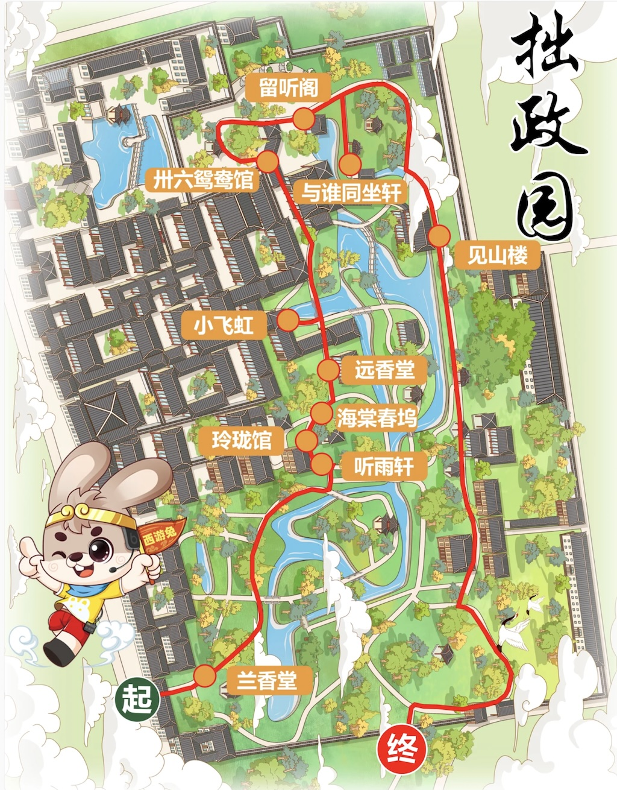
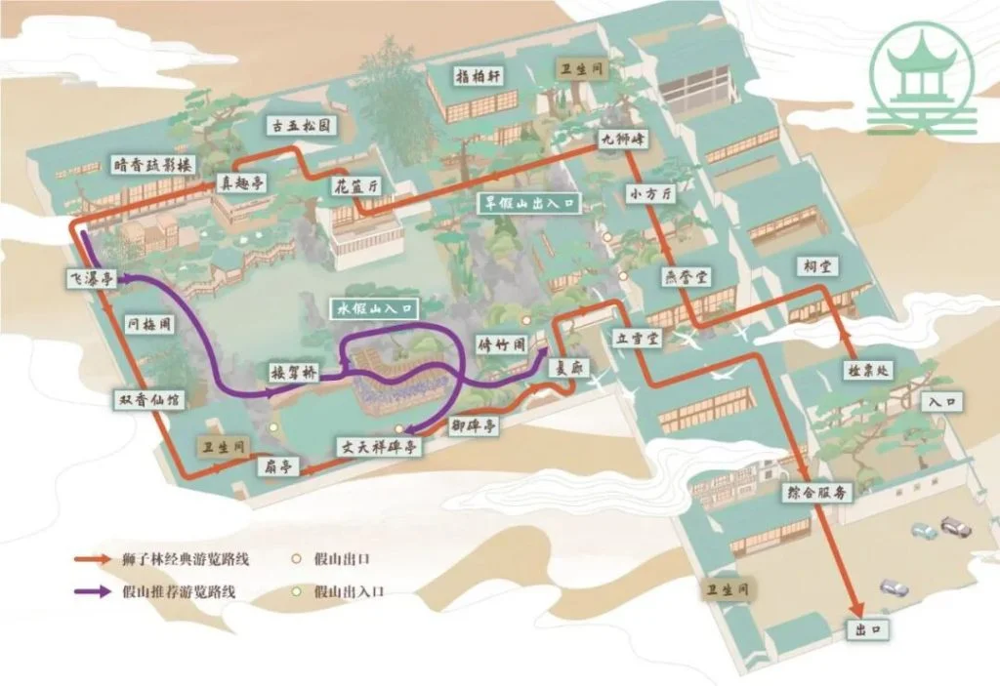
【平江路歷史文化街區】道地蘇幫菜午餐＆名產伴手禮採買
漫步於保留「水陸並行、河街相鄰」雙棋盤格局的平江路與觀前街商圈。自理午餐享用最道地的經典蘇幫菜餚，並在百年老店挑選道地伴手禮。
🐟 蘇幫菜必點美味：
🎁 蘇州精選名特伴手禮：
採芝齋（蘇式糖果酥點、貝母糖）、宋錦絲綢製品、春季現採正宗洞庭碧螺春綠茶。
遊覽「吳中第一名勝」【虎丘山風景區】（中國比薩斜塔）
午後前往大文豪蘇東坡盛讚「到蘇州不遊虎丘，乃憾事也」的虎丘山風景區。近距離瞻仰世界著名的千載斜塔——雲岩寺塔（建於北宋，塔身傾斜近 4 度，被譽為中國的比薩斜塔），探訪闔閭墓傳說之「劍池」、千人石與憨憨泉，登高俯瞰姑蘇古城風光，體會古木參天與深厚歷史底蘊。
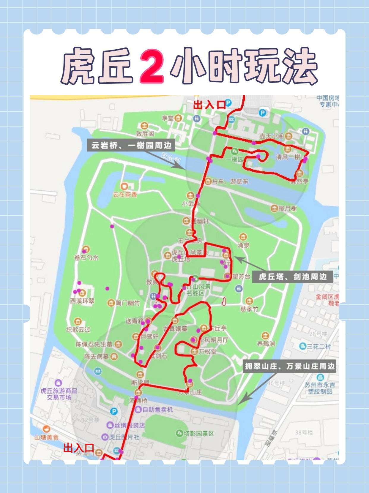
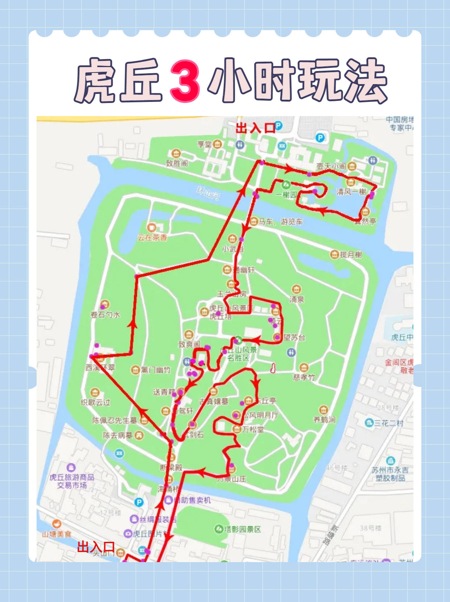
漫步【七里山塘街】・搭乘平底手搖船夜遊賞水巷紅燈籠
黃昏時分造訪由唐代大詩人白居易主持開鑿修築的「神州第一古街」——山塘街。漫步於古石橋與老字號店鋪之間，品嚐蘇式小吃生煎包與梅花糕。入夜後特別安排搭乘平底手搖木船夜遊山塘河，欣賞河道兩岸紅燈籠倒映水波的如夢似幻姑蘇夜景，在微風中聆聽評彈悠揚樂聲。
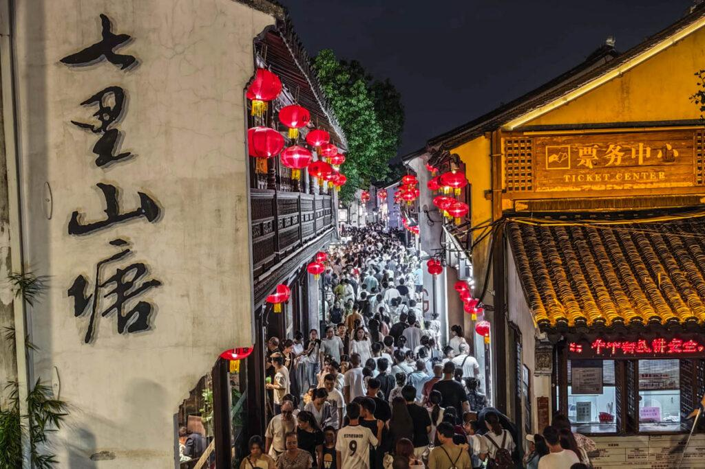
20:30 返回飯店休息・宿：斐利酒店（蘇州陸慕地鐵站店）
夜遊山塘街結束後專車接回飯店休息，整理滿載的伴手禮與美好回憶，連續入住兩晚免去頻繁搬運行李之勞頓。
📍 開啟 Trip.com 查看斐利酒店實景設施與顧客評價蘇州 ➔ 上海（沃爾瑪採買）➔ 浦東機場飯店
貝聿銘大師封刀之作蘇州博物館・《楓橋夜泊》寒山古寺鐘聲・沃爾瑪南浦大橋店伴手禮採買・入住漢庭酒店備戰早班機
專車接送・辦理退房攜帶行李出發
於飯店享用早餐後辦理退房，專車行李隨車裝載，展開蘇州最後一日的經典文博與禪韻古剎之旅。
建築大師貝聿銘封刀之作——【蘇州博物館本館】
造訪由享譽世界的華裔建築大師貝聿銘傾心打造的蘇州博物館本館。大師將傳統蘇式粉牆黛瓦建築元素與現代幾何鋼骨、玻璃天窗完美結合，達到「中而新、蘇而新」的極致和諧。館內水庭的「片石假山」以石為紙、以光為墨，宛如立體宋代山水畫，並可觀賞傳承自明代文徵明親手植栽之紫藤園，是絕不可錯過的當代建築傳世瑰寶。
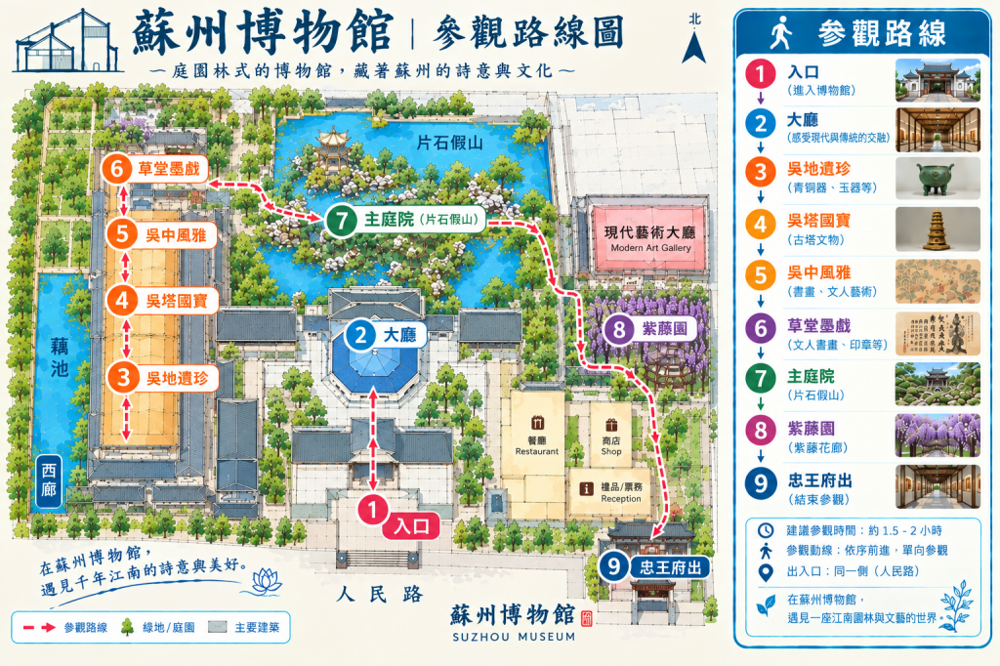
自理享用美味午餐
於蘇州市區享用江南行最後一頓午餐，回味美味的蘇式麵點與糕糰。
參訪千古名剎【寒山寺】（《楓橋夜泊》古寺鐘聲）
專車前往因唐代詩人張繼名作《楓橋夜泊》「月落烏啼霜滿天，江楓漁火對愁眠。姑蘇城外寒山寺，夜半鐘聲到客船」而名揚四海的寒山寺。走訪古木扶疏的大雄寶殿、觀音峰、寒拾殿，仰望唐代建築風格鐘樓，撫摸歷代文人碑刻，敲響福鐘祈求全家安康順遂。
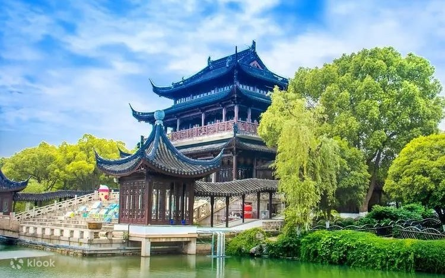
專車啟程前往上海（浦東新區）
告別美麗水鄉姑蘇城，全員搭乘專屬旅遊中巴行駛高速公路直奔上海市區浦東新區，車程約 1.5 至 2 小時，準備前往大型量販賣場進行伴手禮採買。
【沃爾瑪購物廣場（上海南浦大橋店）】伴手禮採買時光（1小時）
專車順利抵達位於南浦大橋旁的沃爾瑪購物廣場，預留 1 小時充裕時間採買！賣場規模宏大、品類應有盡有，為行程返台前集中採購大陸知名伴手禮、上海老字號特產與休閒零食的極佳採購點。
📍 賣場詳細地址與門市資訊：
地址：上海市浦東新區臨沂北路 252-262 號（近南浦大橋浦東引橋、臨沂北路與龍陽路路口）
🎁 推薦採買熱門伴手禮與人氣零食（請留意嚴禁攜帶任何肉製品入境台灣）：
專車啟程前往浦東機場旁住宿飯店
採買滿載而歸後，全員上車直奔上海浦東國際機場周邊飯店，行經迎賓高速公路，車程約 40 ~ 50 分鐘，預計 18:30 前順利抵達飯店辦理入住。
漢庭酒店 (上海浦東機場店)
專車抵達上海浦東機場旁之【漢庭酒店(上海浦東機場店)】辦理入住手續。飯店地理位置極為優越，距離浦東機場僅約 10~15 分鐘車程，並提供住客免費機場接駁專車服務，為次日清晨搭乘早班機的最佳住宿首選！
⏰ 清晨送機接駁重要提醒：
辦理入住手續時，請務必先於前台登記預約隔日清晨 05:00 前往浦東國際機場 T2 之免費接駁巴士。晚間於飯店周邊自理晚餐後請儘早休息，養精蓄銳準備清晨登機。
上海浦東 ✈➔ 香港中轉 ✈➔ 高雄 ➔ 返家
漢庭專車接送浦東T2・國泰航空返程雙航班・香港T1流暢中轉・直抵高雄包車平安返家
辦理退房・搭乘飯店專車前往浦東機場 T2
清晨 04:50 於飯店大廳辦理退房，隨後準時搭乘 05:00 漢庭酒店專屬免費接駁巴士直達上海浦東國際機場 T2 航廈（車程約 15 分鐘）。
抵達浦東機場 T2・國泰航空報到託運
抵達出境大廳國泰航空櫃檯集合，辦理國際線登機報到與行李託運手續。一次領取「上海浦東➔香港」與「香港➔高雄」兩段登機證，行李直掛高雄小港機場（KHH）。隨後通過海關出境審查與安全檢查（切勿託運行李放置行動電源，必須具備清晰 CCC 認證隨身攜帶），前往登機門候機。
✨ 無需重新託運行李（行李全程直掛高雄小港機場）。
✨ 無需過境簽，下機後請沿「轉機/過境 (Transfers)」專用通道安檢，直接前往下一登機門。
抵達高雄小港機場・包車接送平安返家
班機順利於 12:40 抵達高雄小港國際機場，領取直掛托運行李通過台灣海關後，會合預約之接機包車，平安舒適接送返家，圓滿結束 7 天充實難忘的蘇杭江南水鄉與古典名城深度之旅！
2027 蘇杭春季 7 日深度之旅圓滿落幕
靈隱鐘聲、西湖倒影、水鄉柔波、園林疊石與都會繁華，期待下一次與您再度踏上精彩旅程！